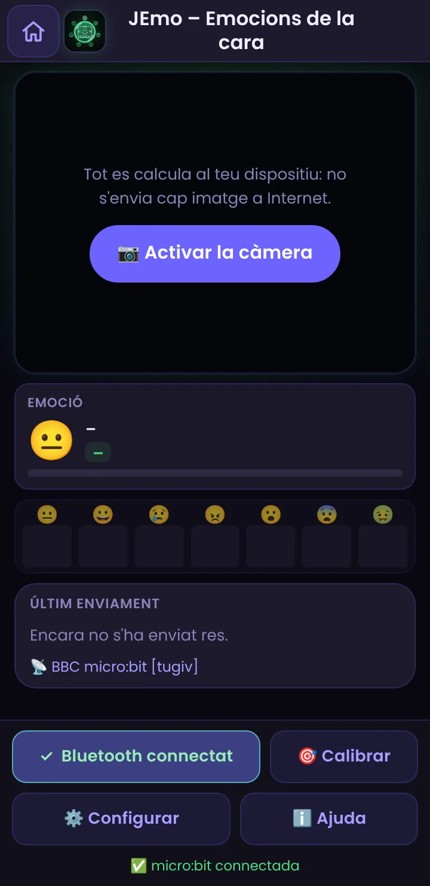
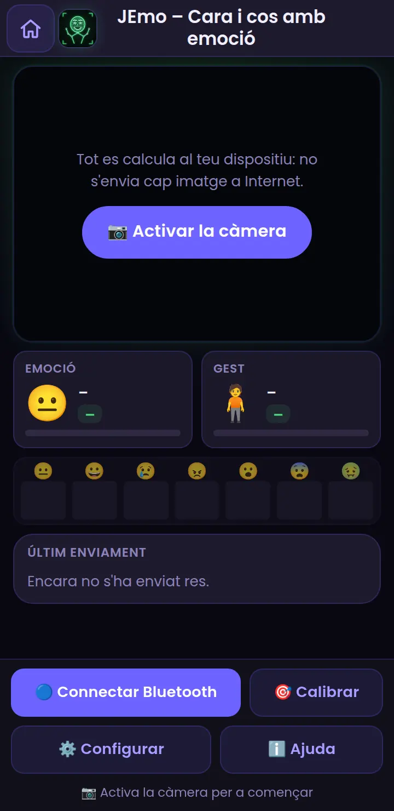
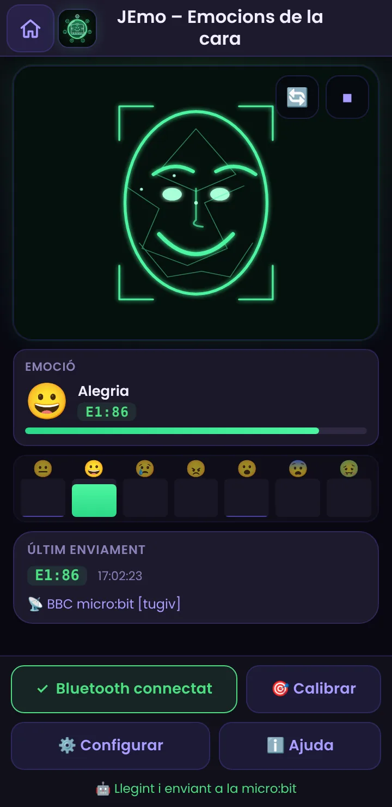
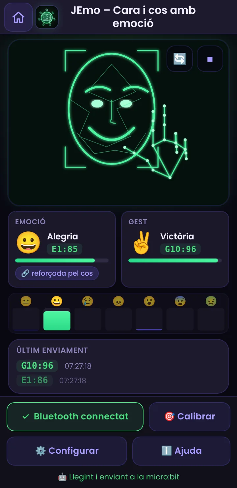
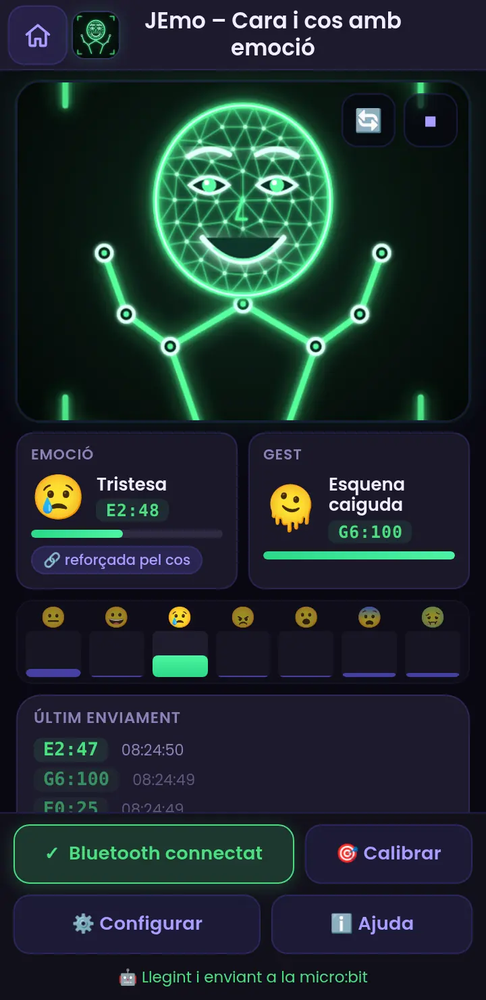
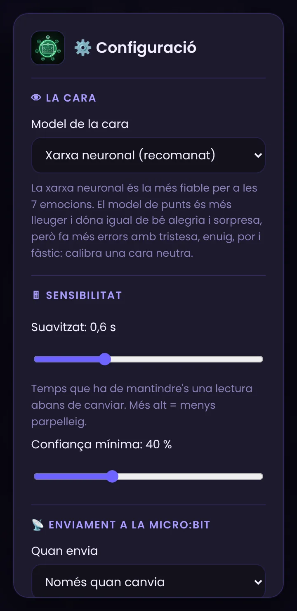
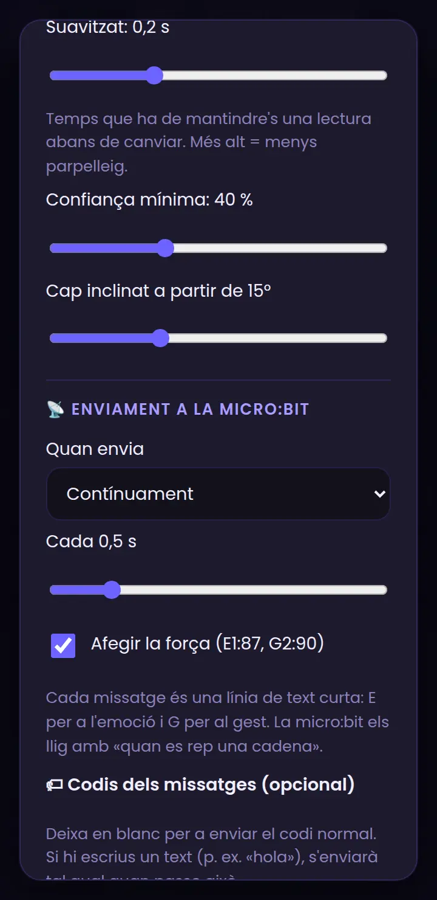

JEmo, pas a pas
Llig amb la càmera l'emoció de la cara i els gestos del cos i els envia a la micro:bit per Bluetooth com a text curt.
Què és i com funciona
JEmo mira amb la càmera la cara, les mans, el cap i, si es veu, el cos d'una persona i envia a la micro:bit, per Bluetooth, quina emoció té la cara (alegria, tristesa, enuig, sorpresa, por, fàstic o neutra) i quin gest fas (saludar, puny, polze amunt, dir que sí o que no amb el cap, braços amunt…). Són missatges de text curts, com E1:87 o G2:90, que tu decideixes què fan a la micro:bit.
Què necessites
- Un mòbil Android amb Chrome (o un ordinador amb Chrome o Edge) amb càmera. En iPhone/iPad el Bluetooth web no funciona, però pots veure la lectura a la pantalla.
- Una micro:bit amb el programa d'esta guia (es fa en 10 minuts). Sense micro:bit també val: veuràs les lectures i els missatges a la pantalla.
Crea un projecte en MakeCode
Obri makecode.microbit.org en el navegador (en un ordinador o en un Android amb Chrome). Prem New Project i posa-li un nom, per exemple jemo.
Activa el Bluetooth: afig l'extensió
Per defecte, MakeCode no inclou els blocs de Bluetooth. Cal afegir l'extensió:
- Al final de la barra de blocs, prem Extensions (o ⚙ → Extensions).
- Escriu bluetooth en el cercador i prem la targeta bluetooth.
- Torna al projecte: ja tens la categoria Bluetooth (color blau).
Bluetooth services
Fes el projecte «sense vinculació»
Este és el pas que més falla. Per defecte, una micro:bit amb Bluetooth exigeix vincular-se abans de connectar (el clàssic dibuix amb el patró de LEDs). Des d'una pàgina web això no funciona bé, així que cal fer un projecte sense vinculació:
- Prem l'engranatge ⚙ (dalt a la dreta) → Project Settings.
- Marca No Pairing Required: Anyone can connect via Bluetooth.
- Tanca el diàleg. El canvi es guarda dins del projecte, i s'aplica en descarregar-lo.
El programa de la micro:bit
La micro:bit rep una línia de text cada vegada que JEmo envia alguna cosa. El programa fa tres coses: separa el codi (el text abans de «:», p. ex. E1 o G10) de la força (el número després de «:»), tria què fer segons el codi i, si vols, usa la força (ací, per a la lluentor dels LEDs).
Per a no haver de muntar tots els blocs a mà, copia el codi, ves a la pestanya JavaScript de MakeCode, esborra el que hi ha, apega'l i torna a Blocks:
let linia = ""
let parts: string[] = []
let codi = ""
let forca = 0
bluetooth.startUartService()
bluetooth.onBluetoothConnected(function () {
basic.showIcon(IconNames.Yes)
basic.pause(500)
basic.clearScreen()
})
bluetooth.onBluetoothDisconnected(function () {
basic.showIcon(IconNames.No)
basic.pause(500)
basic.clearScreen()
})
bluetooth.onUartDataReceived(serial.delimiters(Delimiters.NewLine), function () {
linia = bluetooth.uartReadUntil(serial.delimiters(Delimiters.NewLine))
parts = linia.split(":")
codi = parts[0]
forca = 100
if (parts.length > 1) {
forca = parseInt(parts[1])
}
if (codi == "E0") {
basic.showIcon(IconNames.Meh)
} else if (codi == "E1") {
basic.showIcon(IconNames.Happy)
} else if (codi == "E2") {
basic.showIcon(IconNames.Sad)
} else if (codi == "E3") {
basic.showIcon(IconNames.Angry)
} else if (codi == "E4") {
basic.showIcon(IconNames.Surprised)
} else if (codi == "E5") {
basic.showIcon(IconNames.Confused)
} else if (codi == "E6") {
basic.showIcon(IconNames.Silly)
} else if (codi == "E9") {
basic.clearScreen()
} else if (codi == "G1") {
basic.showIcon(IconNames.Heart)
} else if (codi == "G2") {
basic.showIcon(IconNames.Butterfly)
} else if (codi == "G3") {
basic.showIcon(IconNames.No)
} else if (codi == "G4") {
basic.showIcon(IconNames.Ghost)
} else if (codi == "G5") {
basic.showIcon(IconNames.Asleep)
} else if (codi == "G6") {
basic.showIcon(IconNames.Tortoise)
} else if (codi == "G7") {
basic.showIcon(IconNames.Target)
} else if (codi == "G8") {
basic.showIcon(IconNames.Sword)
} else if (codi == "G9") {
basic.showIcon(IconNames.Fabulous)
} else if (codi == "G10") {
basic.showIcon(IconNames.Diamond)
} else if (codi == "G11") {
basic.showIcon(IconNames.Yes)
} else if (codi == "G12") {
basic.showIcon(IconNames.No)
}
led.setBrightness(Math.map(forca, 0, 100, 40, 255))
})| Codi | Què mostra en este programa | Què significa |
|---|---|---|
| E0 | Meh | Neutra |
| E1 | Happy | Alegria |
| E2 | Sad | Tristesa |
| E3 | Angry | Enuig |
| E4 | Surprised | Sorpresa |
| E5 | Confused | Por |
| E6 | Silly | Fàstic |
| E9 | pantalla apagada | No es veu cap cara |
| G1 | Heart | Braços amunt |
| G2 | Butterfly | Saludant |
| G3 | No | Braços creuats |
| G4 | Ghost | Mans a la cara |
| G5 | Asleep | Cap inclinat |
| G6 | Tortoise | Esquena caiguda |
| G7 | Target | Mà oberta |
| G8 | Sword | Puny |
| G9 | Fabulous | Polze amunt |
| G10 | Diamond | Victòria |
| G11 | Yes | Assentint (sí) |
| G12 | No | Negant (no) |
Descarrega el programa a la micro:bit
Quan els blocs estiguen llestos:
- Posa nom al projecte i prem ⬇ Download. Es baixa un fitxer
.hex. - Amb ordinador: connecta la micro:bit amb el cable USB; apareix com una unitat MICROBIT. Arrossega-hi el fitxer
.hex. El LED groc de darrere parpelleja i, en acabar, la micro:bit es reinicia sola. - Amb un Android: necessites un cable USB-OTG. Connecta la micro:bit i copia el
.hexa la unitat MICROBIT amb l'app de fitxers (o, si Chrome ho ofereix, connecta-la amb «Connect device» des de MakeCode). - Desconnecta el cable USB i alimenta la micro:bit amb la seua bateria (portapiles de 2 pilotes AAA) o deixa-la en un carregador/bateria USB.
Connecta la micro:bit amb JEmo
Amb la micro:bit encesa i el programa descarregat:
- Obri JEmo en Chrome (Android) i permet l'accés a la càmera quan el navegador ho demane.
- Comprova que el Bluetooth del mòbil està activat (i, en Android 11 o anterior, també la ubicació; en Android 12 o posterior, el permís de dispositius propers).
- Prem 🔵 Connectar Bluetooth.
- Chrome mostra la llista de dispositius. Tria BBC micro:bit [tugiv] i prem Vincula (Pair).
- Si tot va bé, el botó es posa verd i diu ✓ Bluetooth connectat, apareix el nom del dispositiu i la micro:bit mostra una ✔ un instant.

Activa la càmera


- Prem 📷 Activar la càmera i accepta el permís de Chrome.
- Espera uns segons: es carreguen els models d'IA (només la primera vegada).
- Col·loca el mòbil a l'altura de la cara, amb llum al davant i la teua cara dins de la imatge. Amb la càmera frontal del mòbil deixa la vista en «Cerca» (és la que ve per defecte): veu la cara i les mans. Si el mòbil està lluny, amb suport, pots triar «Cos sencer» (mira el pas 10).
- Mira les targetes: Emoció a l'esquerra i Gest a la dreta, cada una amb el missatge que s'enviarà (p. ex. E1:84). Sota, les 7 barres mostren com de segura està la xarxa de cada emoció.
- El botó 🔄 canvia entre la càmera frontal i la de darrere; ⏹ l'apaga.
Les 7 emocions
| Codi | Emoció | Com la veu el model |
|---|---|---|
| E0 | 😐 Neutra | Cara relaxada, sense gest marcat. |
| E1 | 😀 Alegria | Somriure, comissures amunt (la més fiable). |
| E2 | 😢 Tristesa | Comissures avall, celles inclinades. |
| E3 | 😠 Enuig | Celles baixes i juntes, llavis tensos. |
| E4 | 😮 Sorpresa | Celles amunt i boca oberta (molt fiable). |
| E5 | 😨 Por | Celles amunt i juntes, ulls molt oberts. |
| E6 | 🤢 Fàstic | Nas arrugat, llavi superior alçat (la més difícil). |
| E9 | 🫥 Sense cara | No es veu cap cara (s'envia una sola vegada). |
Dos models per a la cara
| Xarxa neuronal (recomanat) | Punts de la cara i regles | |
|---|---|---|
| Com funciona | Una xarxa entrenada amb moltes cares dona la probabilitat de les 7 emocions. | MediaPipe troba 468 punts de la cara i unes regles geomètriques (boca, celles, ulls) calculen les emocions. |
| Fiabilitat | La millor per a les 7. | Bona per a alegria i sorpresa; falla més amb tristesa, enuig, por i fàstic. |
| Calibratge | No cal. | Millora molt si calibres la teua cara neutra. |
| Pes | Molt lleuger (≈ 0,5 MB). | Lleuger (≈ 16 MB, inclòs). |
Es tria a ⚙️ Configurar → Què llig → Model de la cara.
Els gestos: mans, cap i cos
Amb la càmera frontal del mòbil només es veu la cara i, com a molt, una mica del pit. Per això JEmo té dues vistes; tria-les a Configuració → Com et col·loques:
| Vista | Quan usar-la | Què llig |
|---|---|---|
| Cerca (per defecte) | Càmera frontal del mòbil, a un braç de distància. | Les mans, els moviments del cap, la mà a la cara o sobre el cap i, si es veuen, les espatlles. |
| Cos sencer | Mòbil o portàtil lluny (1–2 m), amb suport, i tu dret o assegut en un pla ample. | Braços amunt, braços creuats, saludar, mans a la cara, cap inclinat i esquena caiguda (model de postura PoseNet). |
Vista «Cerca»

Tres models treballen junts: la malla de la cara (cap i cara), MediaPipe Hands (21 punts de cada mà) i, si ho actives, PoseNet només per a les espatlles. JEmo calcula un gest cada vegada.
| Codi | Gest | Com es detecta |
|---|---|---|
| G0 | 🧍 Cap gest | Res de especial. |
| G2 | 👋 Saludant | Mà oberta movent-se a un costat i a l'altre. |
| G4 | 🤦 Mà a la cara o sobre el cap | Mà oberta (o a mitges) tocant la cara o damunt del cap. Si la mà és molt més gran que la cara, es veu que està davant de la càmera i compta com a mà oberta. |
| G5 | 🤔 Cap inclinat | La línia dels ulls s'inclina (15° per defecte). |
| G6 | 🫠 Esquena caiguda | Només si es veuen les dos espatlles: el cap baixa cap a elles. Si no es veuen, s'ignora sense avisar. |
| G7 | ✋ Mà oberta | Els quatre dits estirats. |
| G8 | ✊ Puny | Cap dit estirat, el polze no. |
| G9 | 👍 Polze amunt | Polze estirat cap amunt i els altres dits tancats. |
| G10 | ✌️ Victòria | Índex i cor estirats, anular i menut tancats. |
| G11 | ↕️ Assentint (sí) | El cap puja i baixa dues voltes o més. |
| G12 | ↔️ Negant (no) | El cap va d'un costat a l'altre dues voltes o més. |
Vista «Cos sencer»
PoseNet troba 17 punts del cos (cap, espatlles, colzes, canells…) i JEmo n'extrau gestos. Cal que el cap i les dos espatlles es vegen.
| Codi | Gest | Com es detecta |
|---|---|---|
| G1 | 🙌 Braços amunt | Un canell, o els dos, clarament per damunt del cap. |
| G2 | 👋 Saludant | Mà alçada per damunt de l'espatlla movent-se a un costat i a l'altre. |
| G3 | 🙅 Braços creuats | Cada canell cap a l'altra banda del pit. |
| G4 | 🤦 Mans a la cara | Una mà (o les dos) damunt de la cara o del cap. |
| G5 | 🤔 Cap inclinat | El cap ladeja cap a una espatlla (a partir de 15° per defecte). |
| G6 | 🫠 Esquena caiguda | El cap baixa cap a les espatlles (encorbat). |
Cara + cos: reforç i calibratge

Si Què llig és «Cara i gestos» i està marcat Reforçar l'emoció amb el cos, el cos suma una mica a l'emoció que li encaixa (no la decideix ell sol):
| Gest | Reforça |
|---|---|
| 🙌 Braços amunt · 👋 Saludant | Alegria (i un poc de sorpresa) |
| 🙅 Braços creuats | Enuig |
| 🤦 Mans a la cara | Por i sorpresa |
| 🫠 Esquena caiguda | Tristesa |
| 👍 Polze amunt · ✌️ Victòria | Alegria |
| ✊ Puny | Enuig (un poc) |
Calibrar (🎯)
- Seu recte, amb la cara relaxada mirant la càmera.
- Prem 🎯 Calibrar i espera 2 segons.
- Es guarda la teua cara neutra (millora el model de punts) i la teua postura recta (per a detectar millor l'esquena caiguda; es guarda per separat per a cada vista).
Què s'envia i quan


Cada missatge és una línia de text acabada en salt de línia (els missatges llargs es troceen en blocs de 20 bytes, com a les altres apps):
| Opció (⚙️ Configurar) | Què fa |
|---|---|
| Quan envia | Només quan canvia (recomanat): un missatge cada vegada que canvia l'emoció o el gest. Contínuament: repeteix cada 0,2–2 s encara que no canvie. |
| Suavitzat | Temps que ha de mantindre's una lectura abans de canviar (0,6 s per defecte). Més alt = menys parpelleig, però més retard. |
| Confiança mínima | Una emoció nova no guanya si no arriba a este percentatge. |
| Cap inclinat a partir de | Els graus que cal inclinar el cap per a detectar-ho. |
| Afegir la força | Si el lleves, només s'envia E1, G2… (més fàcil de programar). E9 i G0 no porten força mai. |
| Codis dels missatges | Pots posar el teu propi text per a cada emoció o gest (p. ex. «hola» per a alegria): s'enviarà tal qual. |
Sense Internet
JEmo funciona sense connexió si ho prepares abans:
- Amb Internet, a la pantalla principal de PIAR prem «Descarregar per a ús sense Internet»: guarda l'app i els models de la cara i de les mans (i el del cos).
- O, simplement, usa JEmo una vegada amb Internet (amb la càmera encesa) perquè el model del cos quede guardat.
- Després, en mode avió… però no actives el mode avió si vols Bluetooth (o torna a activar-lo).
Idees per a classe
- Pot una màquina saber com et sents? Proveu cares exagerades i subtils. Què encerta? Què no? Hi ha emocions que no es poden «veure»?
- Prejudicis dels models: proveu amb persones diferents (edat, tons de pell, ulleres, barba). Funciona igual de bé per a tots? Què diu això de les dades amb què s'entrenen?
- Models comparats: la xarxa neuronal contra les regles de punts. Quina encerta més? Quina fa més errors, i en quines emocions?
- Teatre d'emocions: un grup fa una emoció, l'altre programa què fa la micro:bit (un robot que s'alegra, que s'enfada…).
- Semàfor de gestos: «mans amunt» = vull parlar, «braços creuats» = no entenc. Una micro:bit a la taula del professor s'il·lumina.
- Privacitat: per què és important que la imatge no isca del mòbil? Què passaria si s'enviara a un servidor?
- Ètica: està bé que un sistema «llija» les emocions dels alumnes en classe? Qui hauria de decidir-ho?
Si alguna cosa no va bé
| Què passa | Per què | Com es resol |
|---|---|---|
| No obri la càmera | No has donat permís o una altra app l'usa. | Cadenat de l'adreça → Permisos → Càmera; tanca altres apps. |
| «No es veu cap cara» | Poca llum, massa lluny o de perfil. | Llum al davant, la cara dins de la imatge i mirant la càmera. |
| Amb la càmera frontal no detecta braços amunt, braços creuats… | La càmera frontal, a un braç, només veu la cara i les mans. | Deixa la vista en «Cerca» (Configuració → Com et col·loques): llig mans i cap. Per a braços i cos, allunya el mòbil i tria «Cos sencer». |
| «No es veu el cos» (vista «Cos sencer») | Falten el cap o una espatlla. | Allunya el mòbil perquè es vegen cap i espatlles. |
| No detecta les mans | Poca llum, la mà molt a prop de la càmera o a contrallum. | Mostra la mà a mitja distància, amb llum i ben oberta; mira que es veja l'esquelet verd sobre la mà. |
| Confon puny i polze, o victòria i mà oberta | La mà està de costat o torçada. | Mostra el gest de cara a la càmera i mantén-lo mig segon. |
| El «sí» o el «no» amb el cap no es detecta (o salta sol) | El moviment és massa petit o massa ràpid. | Fes-lo ben marcat i tranquil; ajusta Moviment del cap a Configuració. |
| L'emoció parpelleja | Cara a mig camí entre dues emocions. | Puja el suavitzat o la confiança mínima. |
| Només encerta alegria i sorpresa | Estàs usant el model de punts sense calibrar. | Canvia a la xarxa neuronal o calibra la cara neutra. |
| No detecta «esquena caiguda» | Cada persona se situa distint davant del mòbil. | Calibra seguda recta (🎯). |
| El model del cos no es carrega | No hi ha Internet i encara no s'havia descarregat. | Obri JEmo una vegada amb Internet; la cara i les mans continuen funcionant (només es perd l'esquena caiguda o la vista «Cos sencer»). |
| Va a salts o lent | El mòbil no pot amb tots els models alhora. | A Què llig tria només cara o només gestos; desmarca «Llegir també l'esquena caiguda»; usa el model de punts per a la cara. |
| No arriba res a la micro:bit | Bluetooth sense connectar o programa no descarregat. | Revisa la guia de JFace; usa Android + Chrome. Comprova que l'«Últim enviament» canvia. |